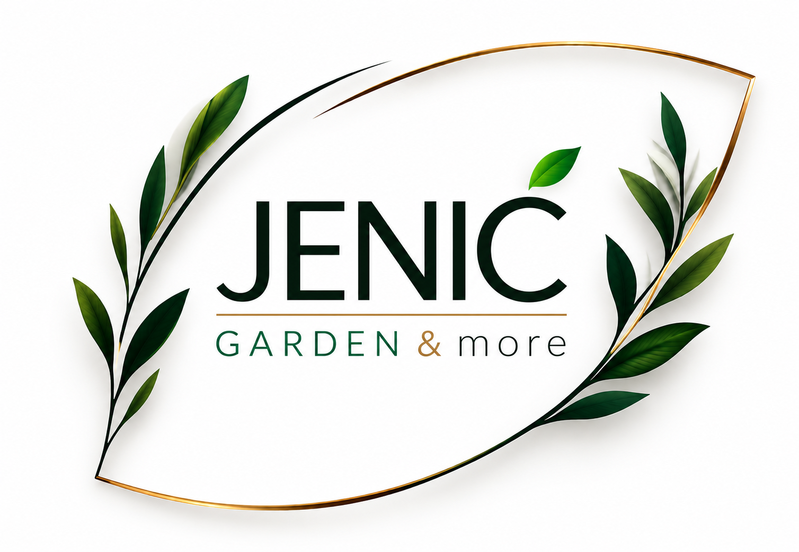
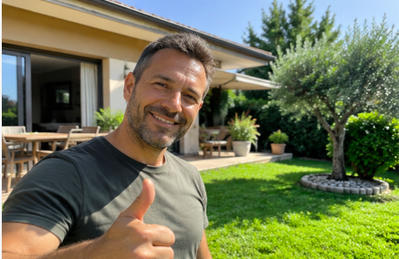
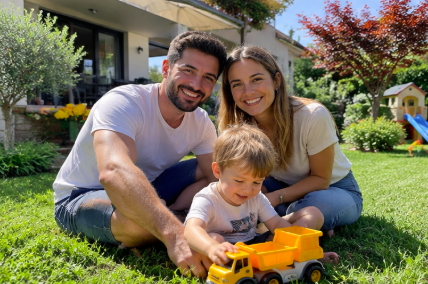

Giardinaggio
Taglio erba, cura del prato e manutenzione degli spazi verdi.

JENIC GARDEN & MORE
Dal giardino alla manutenzione domestica: un unico contatto per tanti lavori, con attenzione ai dettagli e soluzioni pratiche per le tue esigenze.

GiardinaggioVerde ordinato e curato
CasaManutenzione e decorazioni
InstallazioniSoluzioni pratiche
Contatto direttoParla con Marko
COSA POSSIAMO FARE
Una gamma di servizi per prenderti cura del verde e della casa.
Taglio erba, cura del prato e manutenzione degli spazi verdi.
Potatura di siepi e piante per mantenere il giardino ordinato.
Interventi per la cura del terreno e del prato.
Installazione di robot tagliaerba.
Soluzioni per rinnovare gli spazi esterni.
Pitture, finiture decorative e trattamenti antimuffa.
Piccoli interventi e lavori di manutenzione domestica.
Installazione di pavimenti in laminato e SPC.
Montaggio e smontaggio di mobili e arredi.
Trasporti, traslochi e movimentazione mobili.
Supporto per liberare e riordinare locali e spazi.
Non trovi il servizio che cerchi?
Contattaci e spiegaci di cosa hai bisogno.

CHI SIAMO
JENIC Garden & More nasce per offrire un aiuto concreto nella cura degli spazi esterni e nella manutenzione della casa. Dalla gestione del verde ai lavori di pittura, dalle installazioni ai piccoli interventi domestici: l'obiettivo è ascoltare le tue necessità e individuare la soluzione più adatta.
Ogni lavoro merita attenzione, chiarezza e rispetto per gli spazi di chi ci sceglie.
ISPIRAZIONI E INTERVENTI


PERCHÉ JENIC
Ogni esigenza viene ascoltata per capire come intervenire.
Servizi diversi per la casa e gli spazi esterni.
Un contatto diretto per informazioni e preventivi.
LE VOCI DEI CLIENTI
Le esperienze dei clienti JENIC.

"Avevo bisogno di sistemare il giardino e dare una bella rinfrescata agli spazi esterni. Lavoro preciso, disponibilità e tanta attenzione ai dettagli. Sono molto soddisfatto!"
"Ho trovato una persona disponibile e attenta alle mie richieste. Il lavoro è stato svolto con cura e senza complicazioni. È bello poter contare su un unico riferimento per diversi lavori di casa!"

"Volevamo rendere il nostro giardino più bello e ordinato. Abbiamo apprezzato la disponibilità, i consigli e la cura del lavoro. Ora possiamo goderci molto di più i nostri spazi esterni!"
"Avevamo diversi piccoli lavori da sistemare in casa e in giardino. Abbiamo trovato disponibilità e un servizio pratico. Ci siamo trovati bene e siamo contenti del risultato!"
COME FUNZIONA
Scrivici su WhatsApp o chiamaci.
Condividi dettagli e, se utile, alcune fotografie.
Ricevi le informazioni per valutare il lavoro.
CONTATTI
Per informazioni, disponibilità e preventivi, contatta direttamente Marko.
☎